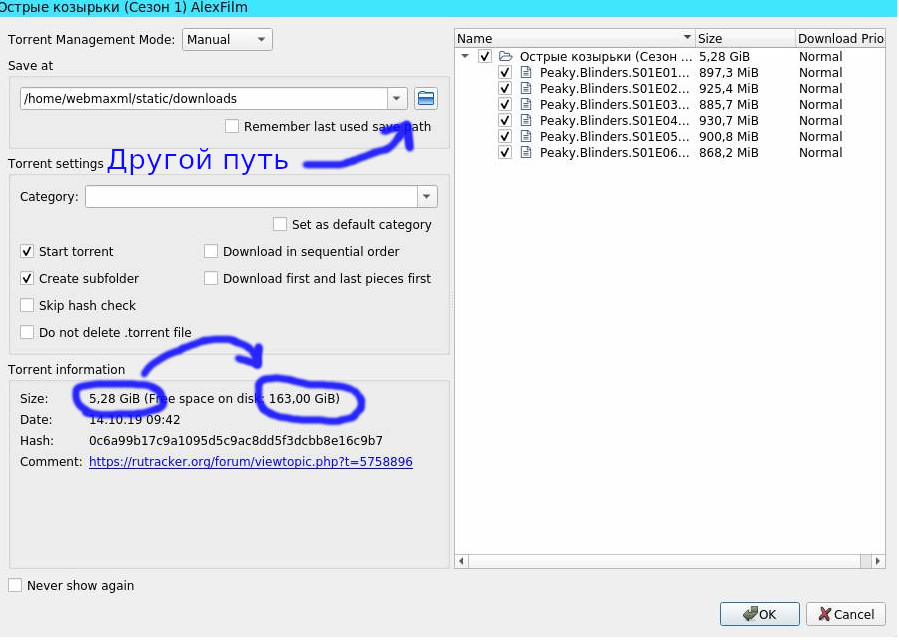
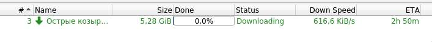

Острые козырьки
Привет! Здесь можно скачать торрент ссылку на Острые козырьки
1. Нажимаешь Скачать
2. Кликаешь по скачанной ссылке
3. В открывшейся программе смотришь, чтобы хватало места для скачивания. Если места не хватает - можно выбрать путь для сохранения в другом разделе
4. Нижмаешь ОК, после чего начинается процесс скачивания. Процесс загрузки можно видеть в колонке загрузки
5. После 100% загрузки файл можно открывать